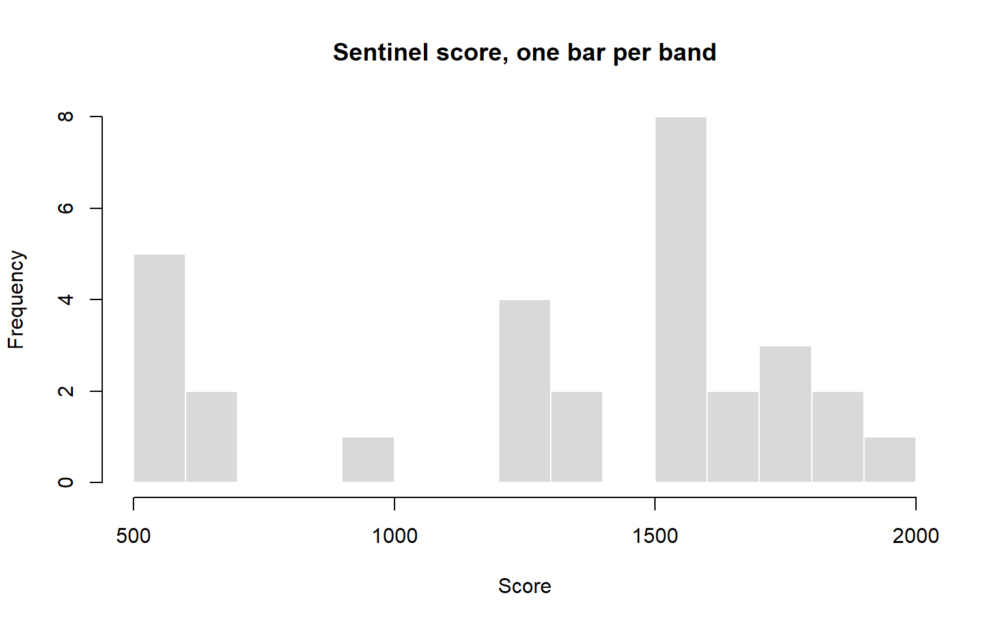
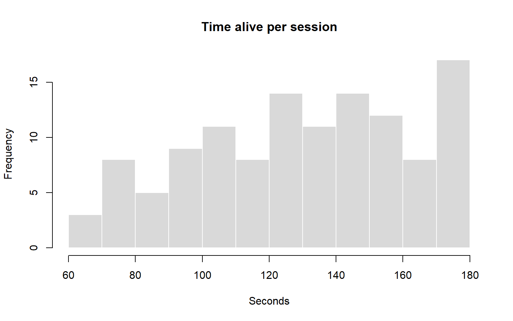
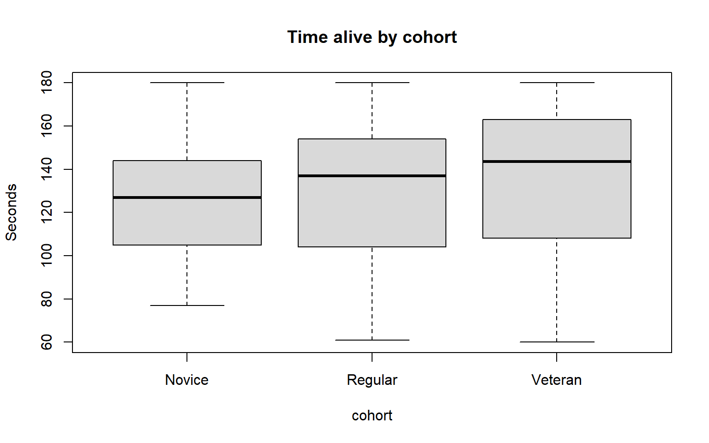

hist(sentinel,
breaks = 12,
main = "Sentinel score, one bar per band",
xlab = "Score",
col = "grey85",
border = "white")
Variable types, tidy data, centre, spread and shape
Week 1, for everyone, before Part B of Lab 01. This is the vocabulary for describing a single variable: what kind of number it is, where its centre sits, how spread out it is and what shape it has. Every later page assumes it.
By the end of these notes you can:
Before comparing anything to anything, you have to be able to say what a single variable looks like. This section is the vocabulary for that, and it is the part students most often skip and most often get caught by.
Four types, and the type decides which operations are legal.
Nominal — labels with no order. Character class, platform, quit reason. You can count them. You cannot average them. The mean of Scout and Sentinel does not exist, and if your code produces one, something has gone wrong upstream.
Ordinal — ordered labels with unknown gaps. Difficulty setting, player experience level, and every agreement scale ever printed. Novice, Regular and Veteran are in an order, but Regular is not “halfway” between the other two in any meaningful sense.
Discrete — counts. Deaths, kills, items collected. Whole numbers, and there is no such thing as 2.4 deaths in a single session — though the average number of deaths across many sessions is perfectly meaningful at 2.4.
Continuous — measurements. Completion time, frame time, distance travelled. Any value in a range, limited only by the precision of your instrument.
The awkward case is the rating scale, and it is awkward every time. A 1–5 agreement scale is strictly ordinal: you know Agree is above Neutral, but you do not know that the step from Disagree to Neutral is the same size as the step from Agree to Strongly Agree. In practice, when a scale has five or more points and the responses are reasonably spread, people treat it as numeric and average it. That convention is defensible and universal, and you should still know you are making an assumption. Where it matters — where the whole finding rests on a mean of 3.2 against 3.4 — report the distribution instead.
Data arrives in whatever shape the tool that produced it happened to use. Almost all analysis assumes one particular shape, and it is worth naming.
A table is tidy when each row is one observation, each column is one variable, and each cell is one value. For a playtest: one row per player per session, one column per thing you recorded.
The most common violation is a survey export, where the eight questions become eight columns. That is convenient to read and inconvenient to analyse, because “question” is really a variable and its eight values have been spread across the column headings. Reshaping it into one row per player per question is what makes the whole survey analysable in one operation, and you will do exactly that in Lab 03.
The 120 Tidebreak sessions come from 30 players who happened to attend this playtest. They are a sample. The population is everybody you are making the game for, and you never get to measure it.
Every number describes the sample. The question you care about is always about the population: not “did these players struggle?” but “will players struggle?”. Bring in a different group next week and every figure on this page moves. How far it can move is the subject of Week 2; until then, report how many people a number came from every time you quote it (rule 8).
Who is in the sample matters as much as how many. A playtest recruited from the studio’s own Discord samples the game’s most committed fans, not its audience. No amount of analysis afterwards corrects for who walked in the door.
Two summaries of “the typical value”, and choosing between them is a real decision, not a formality.
The mean adds everything and divides by the count. It uses every value, which is its strength, and it is dragged by extremes, which is its weakness.
The median is the middle value when sorted. Half above, half below. It ignores how extreme the extremes are, which is its strength and its weakness.
When they disagree, the data is skewed, and the gap tells you which way. If the mean sits well above the median, a few large values are pulling it up: a long right tail. If it sits below, a group of small values is pulling it down.
For game data this is not an edge case, it is the norm. Completion times, session lengths and frame times are all skewed almost by construction — there is a floor on how fast anyone can finish and no ceiling on how slow. Default to the median for anything time-like and reach for the mean only when you have looked at the shape and satisfied yourself it is roughly symmetric.
When you compare the two, compare them relative to the size of the variable. A gap of 40 points on a score in the thousands is nothing; a gap of 3 minutes on a median of 26 is a real skew.
The centre alone is nearly useless. Two levels with identical average completion times, one where everybody takes four minutes and one where half take one minute and half take seven, are not the same level.
Range is minimum to maximum. Easy to quote and almost always misleading, since a single unusual value defines it entirely.
Standard deviation is the typical distance from the mean. It is the right measure for roughly symmetric data and it inherits the mean’s sensitivity to extremes.
Quartiles split the sorted data into four. The first quartile has a quarter below it, the third has three quarters. The interquartile range — the distance between them — is the width of the middle half of your players, and it is the most robust description of spread you have. For skewed game data, quote the median and the IQR together.
Percentiles generalise this: the 95th percentile has 95% of values below it. Distributions and Variation will show you why the 99th percentile of frame time is the single most important number in a performance capture.
Every summary statistic throws information away. That is what a summary is for. The risk is that it throws away the finding.
A histogram shows you the whole distribution: where the bulk sits, whether it is symmetric, whether there is a second hump, whether there are outliers. Draw one before quoting any average. It costs one line.
The number of bins changes what you see, sometimes dramatically. Too few and a second hump disappears; too many and noise looks like structure. Try several. That a chart changes with its settings is not a flaw to hide — it is the first evidence that a chart is an argument rather than a fact, and you are responsible for the argument you make.
A boxplot compresses the same information into median, quartiles and outliers. It is less informative than a histogram for one variable and much better for comparing several groups side by side, which is what Section 4 is about.
Two humps are always worth chasing. A distribution with two peaks usually means two populations have been mixed: players who found the key and players who did not, sessions that completed and sessions that crashed. The average of a bimodal distribution describes nobody at all — it names a value that sits in the valley between the two groups, where the fewest players actually are.
Is the Sentinel underpowered? Sort the four archetypes by mean score and the Sentinel comes last, at 1313 points. A balance pass built on that number buffs the Sentinel.
Sort by median instead and the Sentinel is the second-highest, at 1528. The mean and the median disagree by 215 points, and the standard deviation is 455 against 225 to 259 for the other three. Something is dragging the mean down without moving the middle.
hist(sentinel,
breaks = 12,
main = "Sentinel score, one bar per band",
xlab = "Score",
col = "grey85",
border = "white")
The histogram answers it. 7 of the 30 Sentinel sessions scored under 700 and sit in a clump of their own at the far left, 274 points below the next-lowest Sentinel game. The Sentinel either anchors the round or collapses early. It is not underpowered; it is inconsistent. A flat buff raises the scores of the players already doing well, and the design question becomes what the collapsing games have in common (rule 4).
How clear was the objective? The survey item “I always knew what my objective was” averages 2.61 on a 1 to 5 scale. That is a mean of an ordinal rating, and the distribution says more:
table(survey$objective_clear)
1 2 3 4 5
24 31 37 24 4 55 of 120 players chose 1 or 2, and 4 chose 5. “46% of players disagreed that they always knew their objective” is a sentence a designer acts on. “Mean 2.61” is not (rule 3).
All base R. The variable here is time_alive_s, seconds survived in the match.
summary(sessions$time_alive_s) Min. 1st Qu. Median Mean 3rd Qu. Max.
60.0 105.0 133.0 130.4 155.5 180.0 sd(sessions$time_alive_s)[1] 32.74505IQR(sessions$time_alive_s)[1] 50.5quantile(sessions$time_alive_s, c(0.1, 0.9)) 10% 90%
82.0 175.2 summary() gives centre and quartiles in one call; sd() and IQR() give the two measures of spread; quantile() with a vector of proportions gives any percentiles you ask for, here the 10th and 90th.
hist(sessions$time_alive_s,
breaks = 15,
main = "Time alive per session",
xlab = "Seconds",
col = "grey85",
border = "white")
breaks sets roughly how many bars. Change it and look again before believing any shape.
table(sessions$cohort)
Novice Regular Veteran
33 53 34 table() counts a categorical variable. It is the only summary a nominal variable has.
tapply(sessions$time_alive_s, sessions$cohort, median) Novice Regular Veteran
127.0 137.0 143.5 boxplot(time_alive_s ~ cohort,
data = sessions,
main = "Time alive by cohort",
ylab = "Seconds",
col = "grey85")
tapply() applies one function to one variable, split by a group. The boxplot shows the same split as a picture: the thick line is the median, the box is the middle half, and the whiskers and points show the rest.
A description has four parts: centre, spread, shape and size. One sentence can hold all four:
Median time alive was 133 seconds (IQR 50.5, n = 120). The mean sits 2.6 seconds from the median, so the centre is not being pulled by a tail. 11 sessions sit at exactly 180 seconds, the full match: those players never died, and the tallest bar on the right is a ceiling, not a peak.
Pick the summary to fit the shape, and say why. Median and IQR for anything skewed or with outliers; mean and standard deviation only when the histogram is roughly symmetric.
Keep what the data shows apart from what it suggests. “The Sentinel’s scores fall into two groups” is what the data shows. “Some Sentinel players do not know how to play the role” is a suggestion, and it needs a different kind of evidence before it becomes a conclusion.
Averaging a label. mean(sessions$cohort) returns NA with a warning, which is R protecting you. Code the cohorts as 1, 2 and 3 and R will average them happily, and the answer will mean nothing.
Trusting R’s idea of the type. R stores cohort as text and every survey item as a number. Neither is wrong, but neither tells R that cohorts come in an order or that a rating is ordinal. The type R prints is where your checking starts (rule 3).
Quoting a mean without looking. The Sentinel’s mean is a correct calculation that describes no Sentinel game. Draw the histogram first (rule 4).
Quoting the range as the spread. One extreme player sets the range on their own. Quote the IQR.
Trusting one bin setting. A histogram drawn once is one argument among several the data could make. Redraw it with fewer and more bars.
Leaving out n. “Players rated it 2.6” means nothing without “out of how many” (rule 8).
Each takes two or three minutes.
1. Classify each of these as nominal, ordinal, discrete or continuous: kills, quit_reason, cohort, distance_m, visual_style.
kills discrete; quit_reason nominal; cohort ordinal; distance_m continuous; visual_style ordinal (a 1 to 5 rating), whatever type R gives it.
2. Describe distance_m in one sentence with centre, spread and size. Does the mean sit above or below the median?
median(sessions$distance_m)[1] 381.5IQR(sessions$distance_m)[1] 176.5mean(sessions$distance_m)[1] 387.8833Median distance was 381.5 m (IQR 176.5, n = 120). The mean sits above the median by 6.4 m, which is small against a spread of that size.
3. Use table() to find the most common number of deaths in a session. Why is table() sensible for deaths but not for distance_m?
table(sessions$deaths)
0 1 2 3 4 5 6 7
4 18 26 23 31 12 4 2 The most common count is 4 deaths. Deaths is discrete with only a handful of possible values, so counting each one is informative. 110 of the 120 distance_m values are different, so its table is mostly a list of ones; a continuous variable needs a histogram instead.